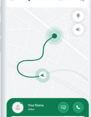
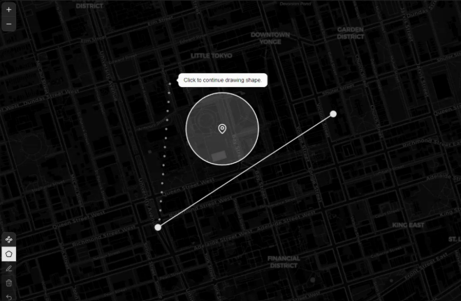
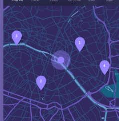
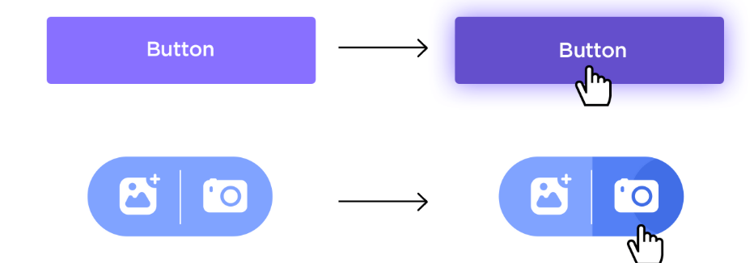
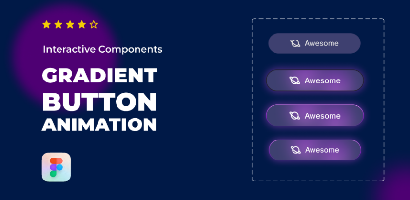
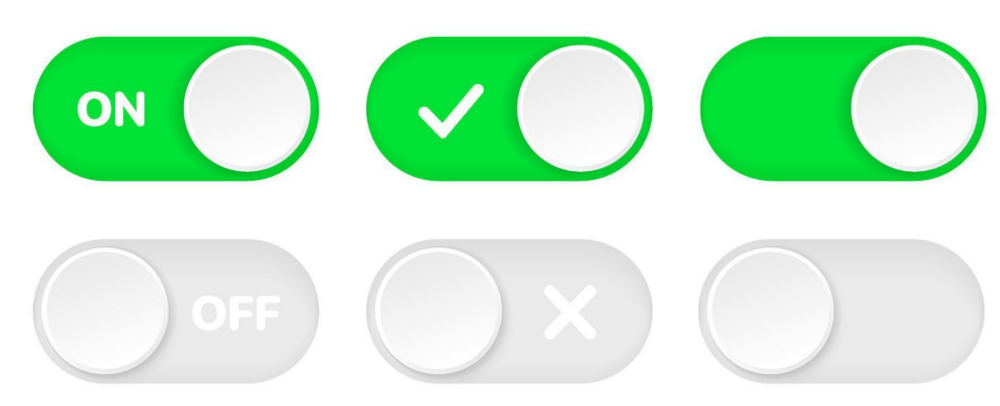
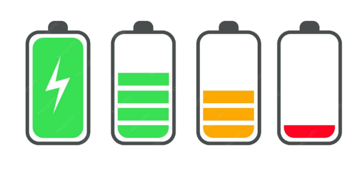
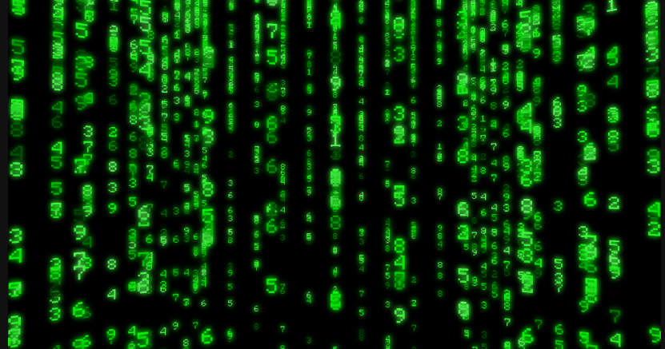

Vom Finden bis zur Fahrt
Map, Vehicle Card, Booking, Confirm und Unlock bilden den schnellen Einstiegsfluss ohne unnötige Umwege.
Abgeschlossener Screendesign-Prototyp für einen E-Scooter-Sharingdienst in Amberg: dunkle Kartenlogik, klare Statussprache und ein durchgängiger Flow vom Finden bis zur Rückgabe.
Der klickbare HTML-Prototyp deckt den finalen Kernfluss inklusive Rückgabe und Summary ab.
Kein Lifestyle-Gedöns. Ein klares Werkzeug für Bewegung durch die Stadt.
Öffnet den interaktiven Kernfluss mit Karte, Reservierung, Fahrt, Rückgabe und Summary.
Map, Vehicle Card, Booking, Confirm und Unlock bilden den schnellen Einstiegsfluss ohne unnötige Umwege.
Ride, Pause, Return und Parking Check zeigen Servicegebiet, Sperrzonen und Ladehub-Bonus als klare Entscheidungslogik.
Die finale Zusammenfassung zeigt Route, Dauer, Kosten und den Bonus-Hinweis als sauberen Endpunkt des Showcases.

Gut für den Gedanken, dass Bewegung nicht nur Status ist, sondern als weiche, klare Spur auf der Karte lesbar wird.

Stark als Referenz für Tiefe, Fokus und reduzierte Kontraste. Die Karte fühlt sich funktional an, nicht touristisch.

Die Farbwelt ist nicht final, aber die Logik aus Netz, Glow und Knoten passt gut für Scooter, Hubs und Auswahlzustände.

Relevant ist hier nicht das Blau, sondern die saubere Lesbarkeit von Hover, Pressed und geteilten Aktionen.

Das hilft für CTA-Energie. Wenn wir Glow nutzen, dann punktuell an Unlock, Reserve und ausgewählten Markern.

Temporär parken, Fahrt aktiv, Rückgabe erlaubt: solche Logik braucht keine Interpretation, sondern eindeutige Schalterstates.

Die Darstellungslogik ist gut: nicht verstecken, sondern mit Form und Farbe direkt in die Auswahlentscheidung ziehen.
Die Richtung taugt für Timer, Scooter-IDs und Preis-KPIs. Für Haupttexte wäre das zu sperrig.

Das zeigt die Grenze ziemlich gut: technisch ja, Sci-Fi-Hackerfilm nein. Share-A-Scooter braucht Urbanität, keine Matrix-Parodie.
Regel: nur eine echte Akzentfarbe pro Screen. Lime treibt Aktion und Verfügbarkeit, Orange und Rot bleiben reine Zustandsfarben.
Nach Ablauf wird der Scooter wieder freigegeben. Die App muss hier Klarheit erzeugen, nicht Dekoration.
Die Karte darf Atmosphäre haben, aber niemals Priorität vor der Statuslogik gewinnen. Erst Lesbarkeit, dann Look.
Bewegung durch die Stadt, leichte Leuchtdichte, ruhige Tiefe statt Effekthascherei.
Bottom Sheet, Marker-Selection, Return-Confirm und Summary-Route bewegen sich gezielt. Mehr braucht das Ding nicht.
Kein Techno-Gimmick und kein White-Label-Einerlei, sondern ein lesbares Mobilitätswerkzeug mit sauberem Endpunkt.